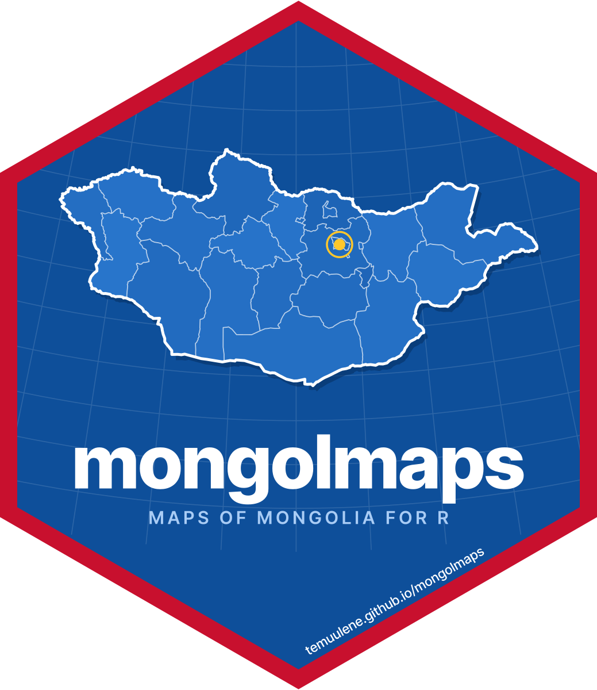

Багийн хил заагийн файл ашиглах
Source:vignettes/articles/bags-from-nso.Rmd
bags-from-nso.RmdБаг нь хөдөөгийн засаг захиргааны хамгийн жижиг нэгж. mongolmaps нэр,
кодыг агуулдаг ч хөдөөгийн багийн хил заагийг
агуулахгүй. Улаанбаатарын хороодыг
mn_khoroos()-оор авна.
Энэ гарын авлага өөрийн авсан хил заагийн файлыг ашиглахыг тайлбарлана. Файлаа өгөх хүртэл багийн зураг харуулах боломжгүй.
library(mongolmaps)
options(mongolmaps.lang = "mn")Кодын жагсаалтыг шалгах
Нэр давхардвал аймаг, сумыг хамт тодруулна.
bag_codes <- mn_codes("bag", within = "MN8401")
knitr::kable(head(bag_codes[c("name_en", "nso_code", "has_geometry")]))| name_en | nso_code | has_geometry |
|---|---|---|
| 1-r bag, Alagtolgoi | 1840151 | FALSE |
| 2-r bag, Baatarkhairkhan | 1840153 | FALSE |
| 3-r bag, Bichigt | 1840155 | FALSE |
| 4-r bag, Bugat | 1840157 | FALSE |
| 5-r bag, Buyant | 1840159 | FALSE |
| 6-r bag, Jargalan | 1840161 | FALSE |
has_geometry = FALSE нь код байгаа ч дүрс багцаар
ирэхгүйг заана. Жишээний код Ховд аймгийн Жаргалант сумыг заана. Бусад
сумыг mn_codes("soum", within = "Khovd")-оор олно.
Хил заагийн файл авах
ҮСХ-ноос shapefile эсвэл GeoPackage хүсэхдээ дараахыг тодруулна:
- Дүрс бүрийн ҮСХ-ны давтагдахгүй код, боломжтой бол текст хэлбэрээр.
- Хил зааг хүчин төгөлдөр байсан огноо.
- Координатын систем.
- Өгөгдөл ашиглах, зураг нийтлэх, дахин түгээх нөхцөл.
ҮСХ-ны албан ёсны вебсайтаар холбогдон олдоц, нөхцөлийг баталгаажуулна. Багц энэ файлыг өгөхгүй.
Файлыг уншиж шалгах
Доорх жоруудын замыг өөрийн файлаар солино. Shapefile-ийн
.shp, .shx, .dbf, тусгагийн
файлуудыг нэг хавтсанд байлгана.
bags <- mn_read_bags("bags_from_nso.gpkg", code_col = "nso_code")
khovd_bags <- mn_bags(aimag = "Khovd", path = "bags_from_nso.gpkg")
mn_map(khovd_bags, title = "Bag boundaries in Khovd")code_col-д файлынхаа кодын баганыг өгнө, эсвэл баганаа
автоматаар таниулахын тулд хасаж болно. Уншигч нь код, дүрс, харьяалах
сумын дотор багтсан эсэхийг шалгана. Шалгалтыг унтраахаасаа өмнө
өгөгдөл, хил заагийн огноог шалгаарай.
Дараагийн дуудлагад ашиглах
Одоогийн R ажиллуулалтад файлаа бүртгэнэ:
Тохиргоог дараагийн ажиллуулалтад хадгалахын тулд
options() мөрийг .Rprofile-д нэмнэ. Файл
бүртгэлтэй үед mn_admin("bag") боломжтой баг, хорооны
хилүүдийг нэгтгэж чадна.
Статистикийн хүснэгт холбох
Энэ жорт code баганатай өөрийн my_bag_table
хүснэгт хэрэгтэй.
bag_map <- mn_join(my_bag_table, by = "code", level = "bag")
mn_join_audit(bag_map)Холбосон өгөгдөл бусад газрын зурагтай ижил баганатай. Зурахаас өмнө тохироогүй код, дутуу дүрсийг шалгана. Өгөгдөл холбох гарын авлага-аас дэлгэрэнгүйг үзнэ үү.